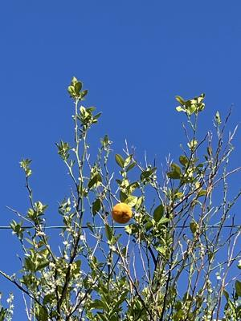
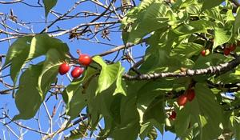
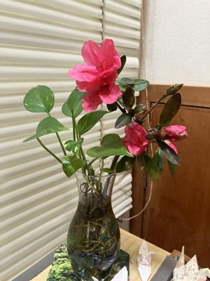

うるがいの話 ある日
最新: 三味線【うるがいの話 ある日】とは 一日だけのプログです
『うるがいの話』の最新一日だけのプログで、通信料が少なく経済的だ。カニの画像をクリックすると全ての日付が載る『うるがいの話』サイトを表示します
|
|
【うるがいの話】 うるがい(ｳﾙｶﾞｲ urugai)とは、『もずくがに』の名前でとても大きくなります。 |
|---|---|
|
|
【カミマヤーの話】 猫のことを方言でマヤーといいます。カミマヤー（kamimayaa）とは、神の猫のことです。 |
|
【たながぁの音楽】 たながぁ（ﾀﾅｶﾞｰ tanagaa）とは手長えびのことで、何種類かあり大きいのは車 エビぐらいになります。 |

|
【ぶながぁの話】 ぶながぁ(ﾌﾞﾅｶﾞｰ bunagaa)とは、赤い髪の毛、赤い身体、そして身長は１ｍ２０ｃｍ ぐらい、川の蟹を食べているの目撃された。場所は沖縄県国頭郡大宜味村のと ある村僕の隣近所に住んでいる爺さんから、聞いた話です。 |
|
|
【ギーマの話】 ギーマ(giima)とは、山原の里山に咲くスズランに似た、 花を付けます。実は食べられます、 気が付くと口の周りが紫になっています。 |
2025年03月23日 (日）三味線
15:10

三味線をはじめよう！―独習でも三味線で弾けるようになる
津川 信子 （著） より
三味線の皮はネコの皮
三味線といわれたとき、多くの人が気になっていることがあるので
はないでしょうか。三味線の皮がネコの皮というのはほんとうなの
か、ということです。ほんとうです。 三味線の胴の両面に張られ
ている皮には、ネコのおなかの皮が使われています。三味線によっ
ては犬の皮も使われます。
琉球（いまの沖縄県）でも三線にニシキヘビの皮が使われました。
ところが、日本の本土にはそんなに大きなヘビはいません。そこで
、手に入りやすいネコや犬の皮が使われるようになりました。一説
には、日本人の声質に近づけるためにネコや犬の皮が張られたとも
いわれています。
ふつう、ネコの皮は「四つ」といいます。１匹のネコから２枚の胴
皮をとるため、胴皮に４つの乳跡がつくためです。犬の皮は「犬皮
」といい、おもに民謡などに使います。とくに力強くたたくように
して弾く津軽三味線は、ネコの皮ではやぶれてしまう恐れがあるの
で、犬皮を使います。
いまでは、合成皮革などの新素材も使われるようになりましたが、
ネコや犬の皮にくらべると、やはり音色が劣るといわれています。
三味線の魅力は 音色の美しさにあるので、ほとんどは、従来どお
りネコや犬の皮が用いられています。
四つと犬皮
四つの方が犬皮にくらべて薄く、音色がいい。しかし四つは高価な
ので、練習には丈夫な犬皮が使われることが多い
引用が多くて、どうかと思うが。三味線向けのユーチューブ動画を
作ってみようかと、三味線の本を読んだら・・・・、怖い怖い。ネ
コは知っていたが、犬もか・・。三味線向けのユーチューブ動画は
ほとんど三線と同じ（調子）なので辞めた。
音色ね、やはり。動画ソフトを新しいバージョンで演奏したら、音
色がいいのです、さらに安いＰＣ２より、高性能のＰＣ３で。でユ
ーチューブ動画を作りました。ところが、だれも視聴しない、知ら
ない曲なのか？。
『ジョン・レノン ラブ (John Lennon Love ) 三線 Guitar』
２分４１秒
https://youtu.be/1XzmYsaPfMs
サクランボ、多分まだ美味しくない

生け花となったツツジ
